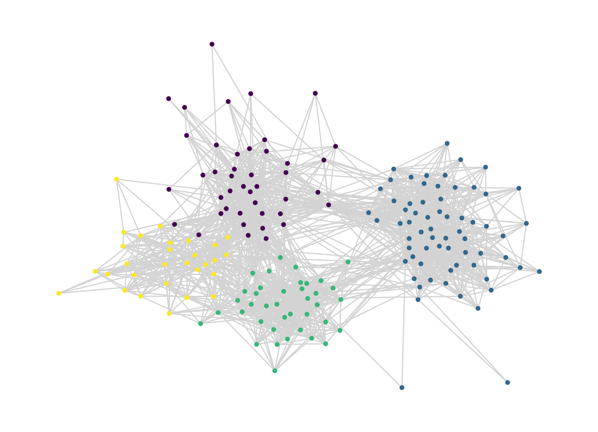
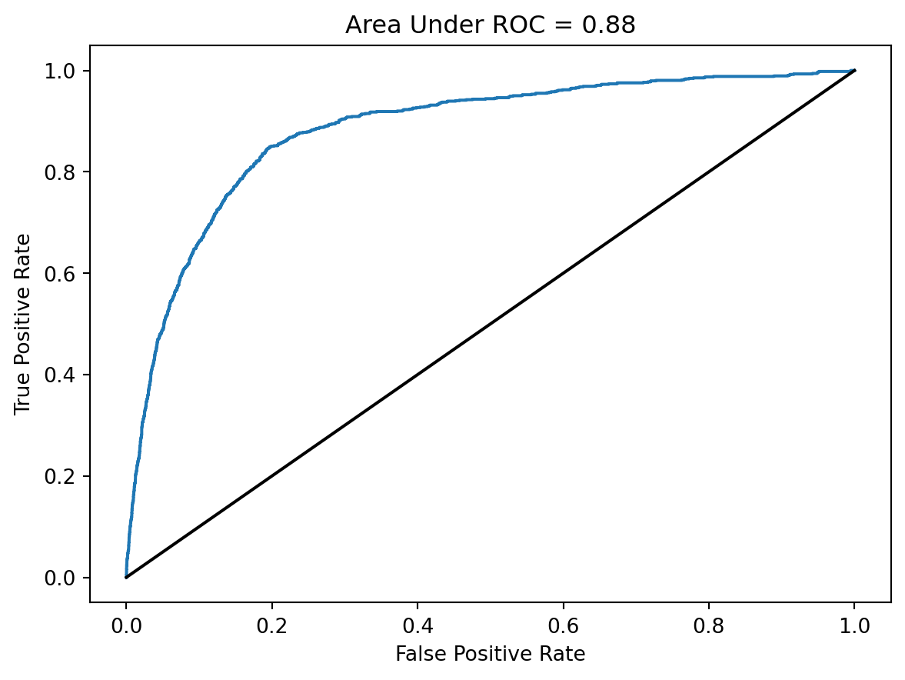

import networkx as nx
import pandas as pd
import numpy as np
from matplotlib import pyplot as plt
from itertools import product
from sklearn.linear_model import LogisticRegression
from sklearn.model_selection import train_test_split
from sklearn import metrics9 Link Prediction and Feedback Loops
In this set of lectures, we’ll study an important task in network data science: link prediction. The link prediction task is to, given a current network and possibly some additional data, predict future edges. This task has many applications:
Link prediction was popularized as a task in network analysis and machine learning by Liben-Nowell and Kleinberg (2007)
- In scientific tasks, we may not be able to collect data on all the edges that we are interested in. If we can develop a model that allows us to predict missing edges, we might be able to learn something about the overall network structure even from partial data.
- Many online recommendation systems are in fact link prediction algorithms. When Facebook recommends a friend to you, for example, this is usually done by training an algorithm that predicts edges in a social network based on attributes, shared friends, etc.
In the first part of these lecture notes, we’ll implement a simple link prediction model. In the second part, we’ll do a simple simulation to learn about how link prediction models can change the structure of social networks.
9.1 Implementing Link Prediction
Data Acquisition and Splitting
The data that we’ll use for this experiment comes from the Sociopatterns project. Fournet and Barrat (2014) used wearable sensors to log social interactions between students in a French high school. We’re going to take the early part of this data (the “training set”) and see if we can use it to make predictions about what happens in the later part (the “test set”).
url = "https://www.philchodrow.com/intro-networks/data/highschool_2012.csv"
contact = pd.read_csv(url, sep = "\t", names = ["time", "source", "target", "class1", "class2"])[["source", "target"]]
# remove small number of self-loops
contact = contact[contact["source"] < contact["target"]]
# number of interactions to include in training data
m_train = 30000
train = contact.loc[0:m_train,:].copy()
test = contact.loc[m_train:,:].copy()It can be very difficult to make useful predictions about whether or not an edge emerges if we don’t know anything already about the nodes. For this reason, we are going to further restrict the test set so that all nodes in the test set are also seen at least once in the training set.
train_nodes = np.unique(np.concatenate([train.source, train.target]))
# we are only going to attempt to make predictions about the existence of an
# edge between two nodes in cases when both nodes had at least one edge
# in the training data.
test["found_source"] = test.source.map(lambda x: x in train_nodes)
test["found_target"] = test.target.map(lambda x: x in train_nodes)
test = test[test.found_source & test.found_target]Finally, rather than try to predict the number of interactions between two agents, we are instead just going to focus on whether or not there was at least one. To do this, we’ll create new versions of our data frames in which each pair appears exactly once.
train = train.groupby(["source", "target"]).count().reset_index()
test = test.groupby(["source", "target"]).count().reset_index()
G_train = nx.from_pandas_edgelist(train)Here’s a picture of the resulting network, with communities found via the Louvain algorithm for approximate modularity maximization:
def louvain_communities(G, return_partition = False):
# run Louvain
comms = nx.community.louvain_communities(G, resolution = 1)
# process the labels
labels = [l for i in G.nodes for l in range(len(comms)) if i in comms[l]]
node_list = list(G.nodes)
comm_dict = {node_list[i] : labels[i] for i in range(len(node_list))}
if return_partition:
return comm_dict, comms
return comm_dict
def louvain_plot(G, comm_dict = None, pos = None, **kwargs):
if not comm_dict:
comm_dict = louvain_communities(G)
# draw the result
if not pos:
pos = nx.fruchterman_reingold_layout(G)
labels = [comm_dict[i] for i in G.nodes]
nx.draw(G, pos, node_size = 10, edge_color = "lightgrey", node_color = labels, **kwargs)
louvain_plot(G_train)
Data Preparation
There are two important steps of data preparation that we need to implement.
In the first step, we need to add negative examples to our training data. A negative example is simply a pair of nodes that don’t have an edge between them. Remember, we would like to train an algorithm to be able to distinguish between nodes that are unlikely to have a new edge between them and nodes that are likely to have a new edge between them. To do do this, we need to offer our algorithm both kinds of examples.
In the second step, we are going to engineer features for each pair of nodes. This is an extremely flexible step, which can make use of many different kinds of techniques. We’re going to use some of the tools that we developed in this course as features.
Negative Examples
Let’s add negative examples. The function below creates a new data frame that contains all pairs of nodes in the graph. A new link column distinguishes which pairs of nodes actually have edges.
def add_negative_examples(df):
# new copy of input data frame, with a new column
df_ = df.copy()
df_["link"] = 1
# data frame with all node pairs
node_list = np.unique(np.append(df_["source"], df_["target"]))
negative = pd.DataFrame(product(node_list, node_list), columns = ["source", "target"])
negative = negative[negative["source"] < negative["target"]]
# add real data and make a column distinguishing positive from negative examples
merged_df = pd.merge(negative, df_, on = ["source", "target"], how = "left")
merged_df["link"] = merged_df["link"] == 1
return merged_dfHere’s how this looks:
train = add_negative_examples(train)
train.sort_values("link", ascending = False)| source | target | link | |
|---|---|---|---|
| 1438 | 610 | 692 | True |
| 9239 | 687 | 1662 | True |
| 9237 | 687 | 1658 | True |
| 5437 | 648 | 666 | True |
| 5434 | 648 | 663 | True |
| ... | ... | ... | ... |
| 5510 | 648 | 867 | False |
| 5511 | 648 | 868 | False |
| 5512 | 648 | 869 | False |
| 5513 | 648 | 871 | False |
| 15575 | 1686 | 1856 | False |
15576 rows × 3 columns
After this step, the training data actually contains very few positive examples:
train["link"].mean()0.11414997431946584We’re hoping that our model is able to learn some information about what makes these 11% of node pairs more likely to have edges than the other 89%.
Feature Engineering
We now need to create features for our model to use to make predictions. This is where we need to bring in some theory: what does make two nodes more likely to have an edge between them? There are a lot of possibilities here, not all of which will necessarily work. We’re going to use the following:
- The degree of each node.
- The PageRank of each node.
- The community label of each node, where these labels are constructed from something like the Louvain algorithm.
- The number of common neighbors between the two nodes. This is related to triadic closure from Section 1 – if the two nodes share a lot of common neighbors, then a link between them would result in more closed triangles.
The following, rather complicated function creates a data frame containing all of these features. Because we’re adding columns to pandas data frames, we usually apply functions in order to skip for-loops and their ilk.
def compute_features(df, G = None, comm_dict = None):
# make the graph if it's not supplied externally
if not G:
edges = df[df["link"]]
G = nx.from_pandas_edgelist(edges)
# make the community labels if not supplied externally.
if not comm_dict:
comm_dict = louvain_communities(G)
# columns for degree of each node in G
df["deg_source"] = df.source.apply(lambda x: G.degree(x))
df["deg_target"] = df.target.apply(lambda x: G.degree(x))
# add columns for pagerank of each node in G
page_rank = nx.pagerank_numpy(G)
df["pr_source"] = df.source.apply(lambda x: page_rank[x])
df["pr_target"] = df.target.apply(lambda x: page_rank[x])
# communities of each node in G
comm_source = df.source.apply(lambda x: comm_dict[x])
comm_target = df.target.apply(lambda x: comm_dict[x])
# number of common neighbors -- networkx has a handy function that does
# this for us! Just gotta get a little fancy with the anonymous function
# calls.
df["common_neighbors"] = df[["source", "target"]].apply(lambda pair: len(list(nx.common_neighbors(G, pair.source, pair.target))), axis = 1)
# add dummy columns for the combination of each community.
combined_comm = "C" + comm_source.map(str) + comm_target.map(str)
df = pd.concat([df, pd.get_dummies(combined_comm)], axis = 1)
return dfOur training data now looks like this:
comm_dict_train = louvain_communities(G_train)
train = compute_features(train, G_train, comm_dict_train)
train| source | target | link | deg_source | deg_target | pr_source | pr_target | common_neighbors | C00 | C01 | ... | C12 | C13 | C20 | C21 | C22 | C23 | C30 | C31 | C32 | C33 | |
|---|---|---|---|---|---|---|---|---|---|---|---|---|---|---|---|---|---|---|---|---|---|
| 0 | 600 | 601 | False | 22 | 24 | 0.005923 | 0.006671 | 10 | 0 | 0 | ... | 0 | 0 | 0 | 0 | 0 | 0 | 0 | 0 | 0 | 0 |
| 1 | 600 | 602 | False | 22 | 10 | 0.005923 | 0.003179 | 0 | 0 | 0 | ... | 0 | 0 | 0 | 0 | 0 | 0 | 0 | 0 | 0 | 0 |
| 2 | 600 | 603 | False | 22 | 16 | 0.005923 | 0.004879 | 0 | 0 | 0 | ... | 0 | 0 | 0 | 0 | 0 | 0 | 0 | 0 | 0 | 0 |
| 3 | 600 | 605 | False | 22 | 17 | 0.005923 | 0.004712 | 1 | 0 | 0 | ... | 0 | 0 | 0 | 0 | 0 | 0 | 0 | 0 | 0 | 0 |
| 4 | 600 | 606 | False | 22 | 17 | 0.005923 | 0.004748 | 1 | 0 | 0 | ... | 0 | 0 | 0 | 0 | 0 | 0 | 0 | 0 | 0 | 0 |
| ... | ... | ... | ... | ... | ... | ... | ... | ... | ... | ... | ... | ... | ... | ... | ... | ... | ... | ... | ... | ... | ... |
| 15571 | 1678 | 1686 | False | 36 | 28 | 0.009116 | 0.007134 | 20 | 1 | 0 | ... | 0 | 0 | 0 | 0 | 0 | 0 | 0 | 0 | 0 | 0 |
| 15572 | 1678 | 1856 | False | 36 | 14 | 0.009116 | 0.003958 | 9 | 1 | 0 | ... | 0 | 0 | 0 | 0 | 0 | 0 | 0 | 0 | 0 | 0 |
| 15573 | 1679 | 1686 | True | 13 | 28 | 0.003764 | 0.007134 | 8 | 1 | 0 | ... | 0 | 0 | 0 | 0 | 0 | 0 | 0 | 0 | 0 | 0 |
| 15574 | 1679 | 1856 | False | 13 | 14 | 0.003764 | 0.003958 | 5 | 1 | 0 | ... | 0 | 0 | 0 | 0 | 0 | 0 | 0 | 0 | 0 | 0 |
| 15575 | 1686 | 1856 | False | 28 | 14 | 0.007134 | 0.003958 | 10 | 1 | 0 | ... | 0 | 0 | 0 | 0 | 0 | 0 | 0 | 0 | 0 | 0 |
15576 rows × 24 columns
The C columns hold information about the communities of the nodes involved. For example, C13 means that the source node is in community 1 and the target node is in community 3.
Model Training and Interpretation
The nice thing about the link prediction problem is that, once you have your data organized as a data frame, you can actually use any classification algorithm you want for the actual learning step. Here we’ll just use logistic regression:
feature_cols = [col for col in train.columns if col not in ["source", "target", "link"]]
X_train = train[feature_cols]
y_train = train["link"]
model = LogisticRegression(solver = "liblinear")
fit = model.fit(X_train, y_train)What did our model learn about the features? Which of these features help predict whether an edge is going to be observed between two nodes?
pd.DataFrame({
"feature" : model.feature_names_in_,
"coef" : model.coef_[0]
})| feature | coef | |
|---|---|---|
| 0 | deg_source | 0.016993 |
| 1 | deg_target | 0.016087 |
| 2 | pr_source | 0.003912 |
| 3 | pr_target | 0.009672 |
| 4 | common_neighbors | 0.272609 |
| 5 | C00 | 0.350361 |
| 6 | C01 | -0.714457 |
| 7 | C02 | -1.553005 |
| 8 | C03 | -1.000694 |
| 9 | C10 | -1.100413 |
| 10 | C11 | 0.664570 |
| 11 | C12 | -0.103580 |
| 12 | C13 | -0.467607 |
| 13 | C20 | -1.867155 |
| 14 | C21 | 0.172986 |
| 15 | C22 | 1.683378 |
| 16 | C23 | -0.052263 |
| 17 | C30 | -1.220019 |
| 18 | C31 | 0.271925 |
| 19 | C32 | -0.087583 |
| 20 | C33 | 0.927243 |
Positive coefficients indicate that larger values of the feature make edges more likely, while negative coefficients indicate the opposite. There’s a lot to take in, but let’s focus on some of the big picture highlights:
First, the first five features all have positive coefficients. This indicates that an edge is more likely between two nodes when: - Each node has higher degree. - Each node has higher PageRank. - The two nodes share many common neighbors. It’s interesting to note that the coefficient of the number of common neighbors is so much higher than the coefficients for the individual node degrees. According to our model, adding 5 neighbors to each node in a pair has less of an impact on the likelihood of an edge than adding a single neighbor that is shared by both of them.
Second, while the community features can be a little hard to interpret, the thing that sticks out is that the features with the most positive coefficients are the ones in which both nodes belong to the same community. This tells us that edges are more likely to exist between nodes in the same community, which makes sense – this is pretty much guaranteed based on how modularity maximization defines communities in the first place.
Model Evaluation
It’s all well and good to fit our model on training data and interpret the coefficient, but this doesn’t necessarily tell us anything about the ability of our model to make predictions about the future. To do this, we need to look at our test data. In this case, it’s important that we pass the test data through the same preprocessing as we did before, adding negative examples and feature columns. Very importantly, we pass the graph G_train and the community labels comm_dict_train as an argument to compute_features in order to ensure that things like degree, PageRank, and community structure are calculated using only training data, not testing data. Using testing data to construct the features would be cheating!
test = add_negative_examples(test)
test = compute_features(test, G_train, comm_dict_train)
X_test = test[feature_cols]
y_test = test["link"]We can now get the model’s predicted probabilities for each pair of nodes.
y_pred = model.predict_proba(X_test)[::,1]We can interpret these predictions like this:
i = 1932
f"Our model predicts that the probability of a new edge between nodes {test['source'][i]} and {test['target'][i]} is approximately {np.round(y_pred[i], 2)}."'Our model predicts that the probability of a new edge between nodes 615 and 682 is approximately 0.02.'We’ll evaluate our model using the area under the receiver operating characteristic curve (often just called the “area under the curve” or “AUC” for short).
auc = metrics.roc_auc_score(y_test, y_pred)
false_positive_rate, false_negative_rate, _ = metrics.roc_curve(y_test, y_pred)
plt.plot(false_positive_rate,false_negative_rate)
plt.title(f"Area Under ROC = {np.round(auc, 2)}")
plt.ylabel('True Positive Rate')
plt.xlabel('False Positive Rate')
plt.plot([0,1], [0,1], color = "black")
plt.show()
An AUC of 50% corresponds to a model that has failed to learn anything about the data, while an AUC of 100% corresponds to perfect prediction. The AUC we’ve realized here isn’t perfect, but it shows that we are able to predict the formation of new edges much more accurately than would be possible by random chance.